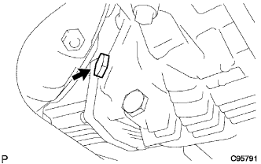
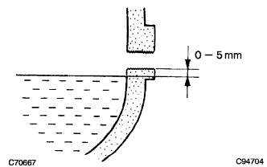
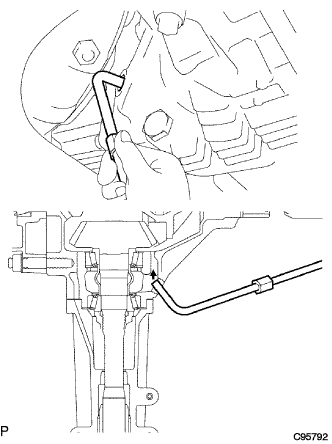

Transfile (4WD) adjustment |
| 1. Trans -firer oil inspection |
Remove the transfaser plug No.1 (filler plug).
|  |
Remove the gasket from the transfaser plug No.1 (filler plug).
|  |
Confirm that there is an oil within 0-5mm from the lower end of the hole from the lower end.
Attach the transfastra plug No.1 (filler plug) via a new gasket.
| 2. Transfish oil adjustment |
Remove the transfaser plug No.1 (filler plug).
Remove the gasket from the transfaser plug No.1 (filler plug).
|  |
Put the nozzle and inject Toyota genuine gear oil supermarket (SAE-75W-90 GL-5).
After leaving it for 5 minutes, check the amount of oil again.
Attach the transfastra plug No.1 (filler plug) via a new gasket.